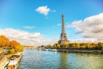

Buckingham Palace is the London residence and administrative headquarters of the monarch of the United Kingdom. Located in the City of Westminster, the palace is often at the centre of state occasions and royal hospitality. It has been a focal point for the British people at times of national rejoicing and mourning
The Colosseum or Colosseum, also known as the Flavian Amphitheatre, is an oval amphitheatre in the centre of the city of Rome, Italy. Built of travertine limestone, tuff, and brick-faced concrete, it was the largest amphitheatre ever built at the time and held 50,000 spectators.
The Pena Palace is a Romanticist castle in São Pedro de Penaferrim, in the municipality of Sintra, on the Portuguese Riviera. The castle stands on the top of a hill in the Sintra Mountains above the town of Sintra, and on a clear day it can be easily seen from Lisbon and much of its metropolitan area
The Eiffel Tower is a wrought-iron lattice tower on the Champ de Mars in Paris, France. It is named after the engineer Gustave Eiffel, whose company designed and built the tower.

Le Mont-Saint-Michel is an island and mainland commune in Normandy, France. The island is located about one kilometer off the country's northwestern coast, at the mouth of the Couesnon River near Avranches and is 7 hectares in area.